Nuestra Historia
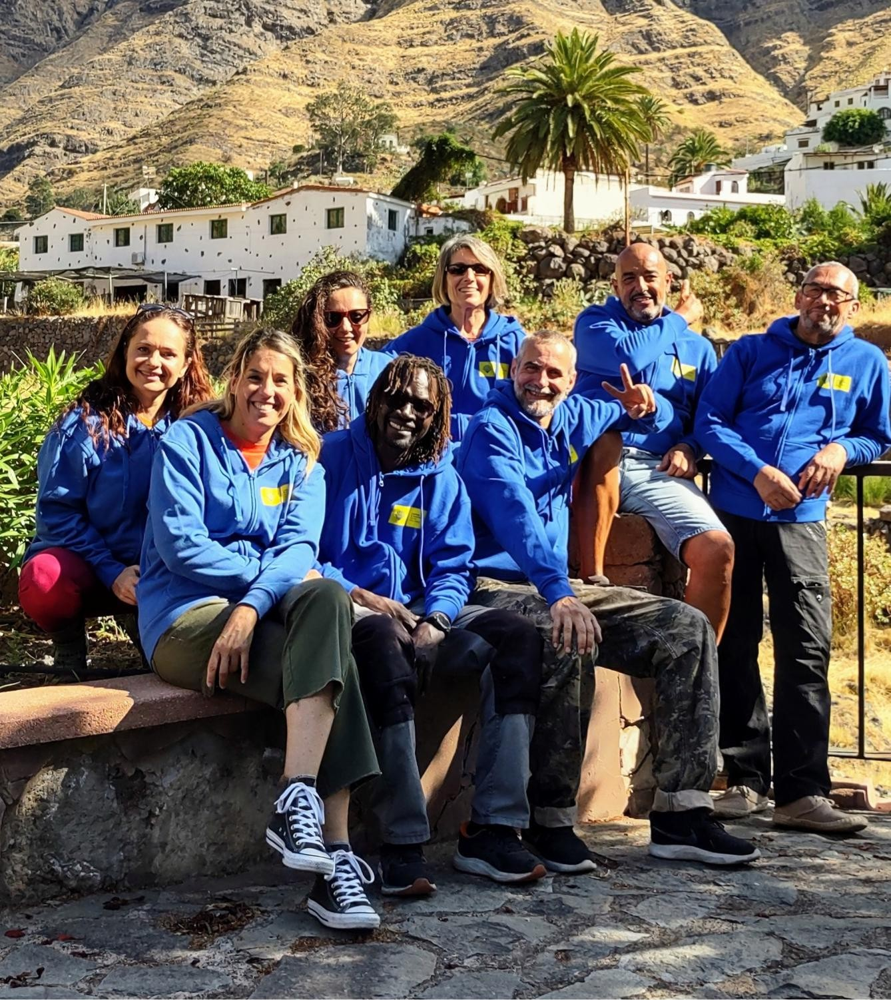
ANDA QUE ANDA nació a finales de abril de 2022 en Las Palmas de Gran Canaria y está inscrita en el Registro de Asociaciones reconocido por el Gobierno de Canarias. El hecho de trabajar en proyectos de teatro social es una de sus finalidades más importantes. Contamos con tres grupos de teatro amateur y con una treintena de actrices y actores (7 con diferentes discapacidades) de distintas nacionalidades (española, italiana, francesa, ucraniana, senegalesa, venezolana, alemana).
Desde su creación, la compañía cuenta con numerosas actuaciones de la primera comedia, "Buen Camino!" en diversos teatros y salas culturales.
Entre ellos, en Las Palmas de Gran Canaria, muestra de teatro en: el Club Hespérides, el Real Club Victoria, SIT, Sala Insular de Teatro; representaciones en: el Centro Cívico Suárez Naranjo, el Instituto IES La Isleta, plaza del Pueblo para el Día de la Isleta. También en la Casa de la cultura de Moya. Estamos ensayando una comedia: "La Cofradía de la Sardina" (estreno en noviembre 2026) y otra comedia callejera interactiva, "El Camino de Santiago" (estreno en septiembre 2026), adaptación de "¡Buen Camino!".
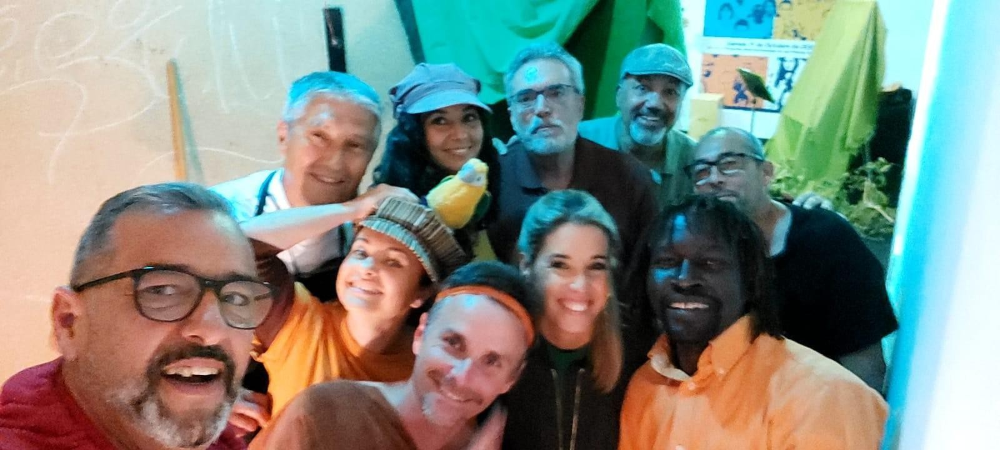
El grupo también ha llevado la obra a los centros penitenciarios de Juan Grande y Salto del Negro y en la 5 Planta del Hospital Insular. Numerosas las actuaciones callejeras (Teatro itinerante), donde los actores pasan de un escenario a otro caminando e improvisando con el público. ¿Dónde? Cuatro veces en el paseo de las Canteras en Las Palmas, en el Valle de Agaete, en Vegueta, el centro histórico de Las Palmas.
Festivales: actuación en la primera edición del Festival de Teatro Popular "Hermenegildo Socas Cruz" en Icod de los Vinos, Tenerife; en el 1º "Festival Círculo en escena" del Círculo Mercantil de Las Palmas; en el Festival TeTeatro en Güímar, Tenerife.
Con la obra "La Librería de las Almas" (teatro inclusivo), en el Festival de Teatro amateur 2025 en el Teatro Guiniguada de Las Palmas de Gran Canaria; en el IES La Isleta, en el Centro Penitenciario de Salto del Negro, en Las Palmas.
Anda que anda tiene una magnífica relación con el barrio de la Isleta, en Las Palmas, donde se sitúa. Es parte del ForoXla Isleta y del Grupo Cultura Foro Isleta que agrupa asociaciones, entes y privados que trabajan en el sector artístico, cultural y social del barrio. De hecho, las tres compañías ensayan en el Instituto de educación secundaria IES La Isleta.
De momento estamos llevando a cabo tres proyectos pioneros:
TeHospiCan, Teatro en los Hospitales de Canarias. Proyecto pionero en España que lleva espectáculos de teatro amateur en los hospitales en colaboración con los mismos Hospitales y el Gobierno de Canarias.
Los objetivos son: utilizar el teatro como herramienta para humanizar los hospitales, aliviando la estancia de pacientes, familiares, amigos y también el ánimo del personal hospitalario que trabaja cotidianamente en.
condiciones de estrés laborales. "Si las terapias médicas ayudan al cuerpo, el arte regenera el alma de las personas, y crear un estado de ánimo alegre y relajado ayuda en la curación".
Los espectáculos se van a representar en espacios idóneos de las diferentes plantas de los Hospitales
canarios. El propósito es fijar cuatro fechas al año en cada Hospital. En cada fecha se puede representar un solo espectáculo o más de uno dependiendo si hay posibilidades de horario.
El Proyecto no comporta coste para los hospitales.
Hasta ahora la compañía ha actuado: dos veces en el Hospital Insular, una vez en el Hospital Universitario Doctor Negrín, una en el Hospital Polivalente, anexo al Juan Carlos I y en el Hospital Universitario de
Nuestra Señora de la Candelaria en Santa Cruz de Tenerife
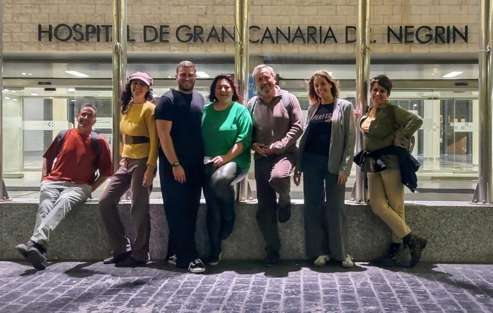
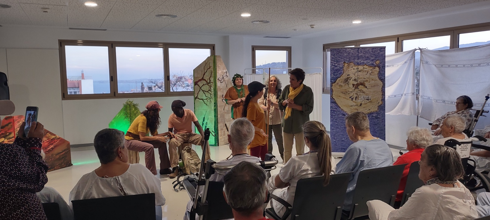
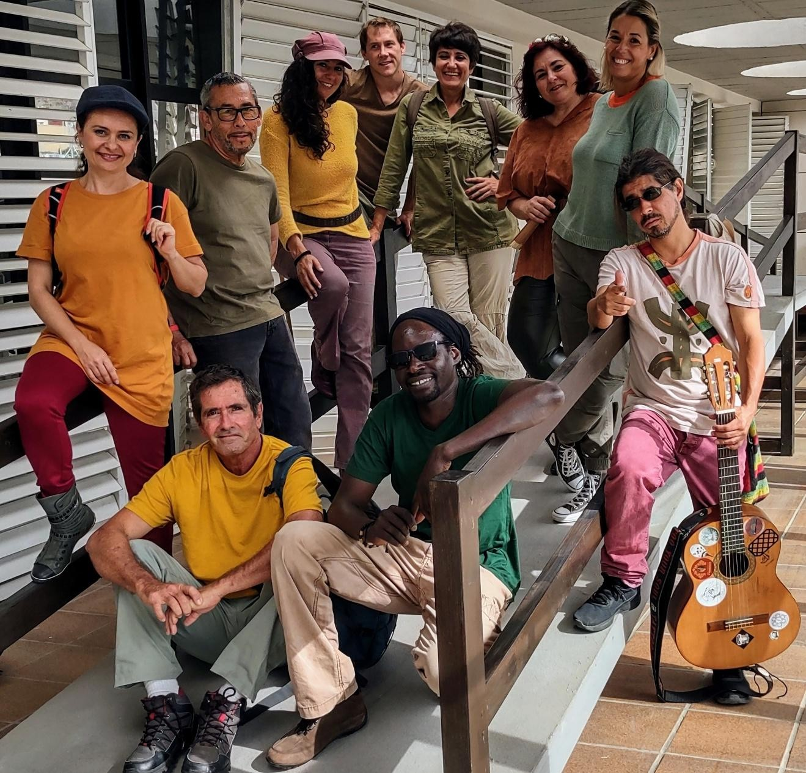
(arriba). La compañía en la terraza de la 5 Planta Medular del Hospital Insular (abajo), Las Palmas de Gran Canaria.
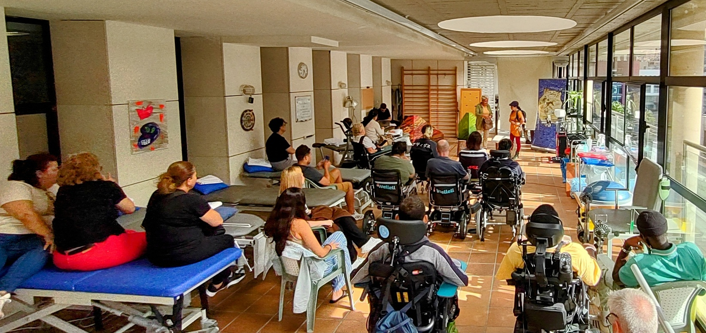
Actuacion en la terraza de la 5 Planta Medular del Hospital Insular (abajo), Las Palmas de Gran Canaria.
Todos somos uno. Proyecto de teatro inclusivo donde actúan personas con diferentes discapacidades (motrices y mentales). Actuar como un reto. Actuar para socializar y sentirse vivos. Todos han mejorado su calidad de vida y tienen un reto que los apasiona. Forman parte de un grupo de teatro con gente de diferentes edades y diferentes nacionalidades, todas entusiastas y comprometidas, que los
empujan y animan a seguir adelante.
Juntos han estrenado la obra "La librería de las almas" el 12 de junio 2025 en el teatro Guiniguada de Las Palmas y la están presentando en otros escenarios como en la cárcel de Salto del Negro y en la Biblioteca de Arucas. Un esfuerzo de equipo con personas altamente motivadas.
"La Librería de las almas" no es solo teatro inclusivo, sino también un teatro que denuncia la violencia de género y reafirma el Artículo 14 de la Constitución Española de 1978 donde se establece el principio de igualdad lo que significa que todas las personas en España son consideradas iguales ante la ley, sin ningún tipo de discriminación por razones de nacimiento, raza, sexo, religión, opinión o cualquier otra condición personal o social.
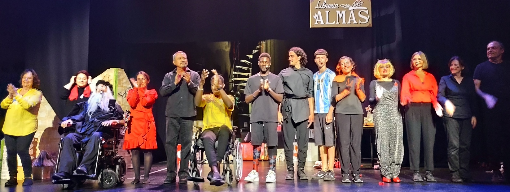
Actuación el 12 de junio 2025 en el Festival de teatro no profesional en el teatro Guiniguada de Las Palmas de Gran Canaria
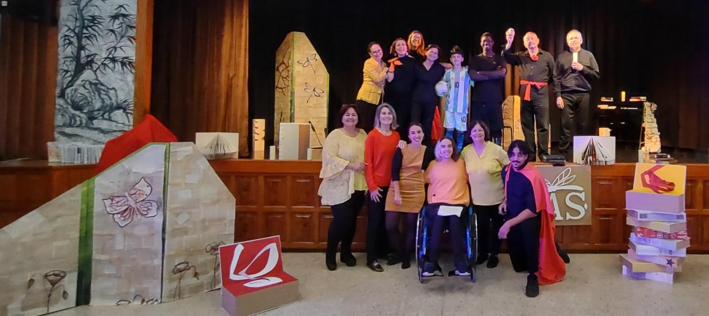
Actuación del 16 junio 2025 en el Instituto IES La Isleta, en Las Palmas de Gran Canaria.
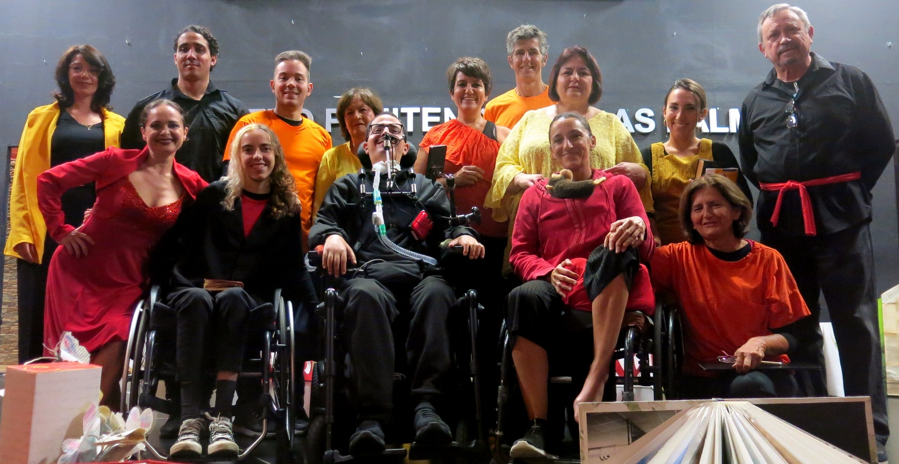
22 noviembre 2025. Actuación del grupo de La Librería de las almas en el Centro Penitenciario de Salto del Negro, Las Palmas.
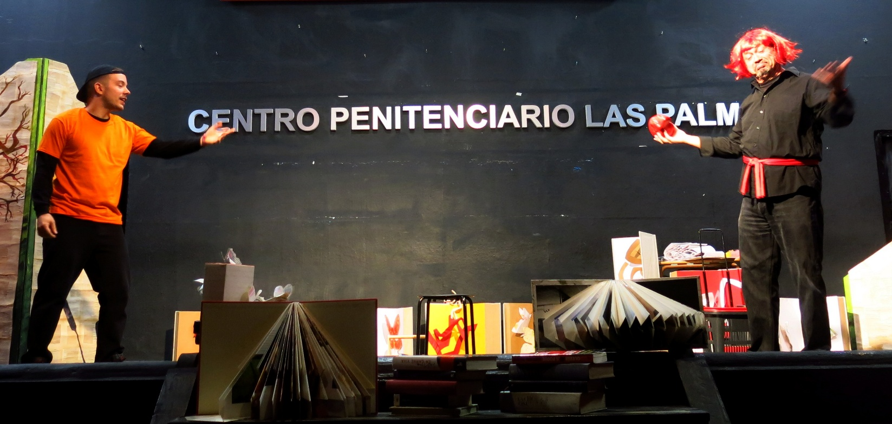
TeTera (TeatroTerapia) para mayores, en colaboración con Servicios sociales y comunitarios del Ayuntamiento de Las Palmas, en los 4 distritos de la ciudad. Un proyecto único en el panorama canario,
creado específicamente para mejorar la calidad de vida de los mayores; eficaz en la liberación de emociones, en profundizar el autoconocimiento y la autoestima, en estimular la memoria, en combatir la depresión y en abordar la discriminación por edad. Todo esto, entrenando la memoria, mejorando las relaciones, expresando las propias necesidades y superando el miedo y la soledad.
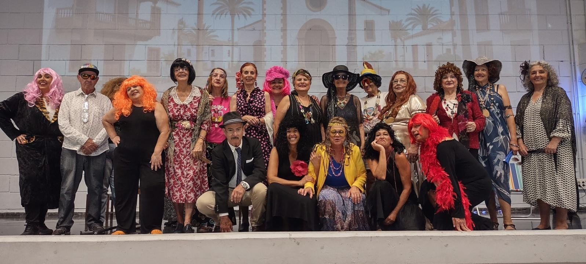
Ensayo general de los actores y actrices de los Distritos de Ciudad Alta, Centro y Lomo Apolinario.
Un curso donde los participantes han realizado un musical "El amor no caduca" representado, en julio 2025, por los participantes de los tres Distritos de Ciudad Alta, Centro y Lomo Apolinario y, en noviembre 2025, por el Distrito Puerto Guanarteme, ambos
espectáculos en el Centro Cívico de la Ballena en Las Palmas con la dirección de Ruth Plata León. Palabras clave: diversión, unión, creatividad y alegría. Un Proyecto que se está desarrollando también en San Nicola de Tolentino, en la Aldea, gracias a la colaboración de la concejalía de Asuntos Social y que acabará con otro espectáculo en junio 2026.
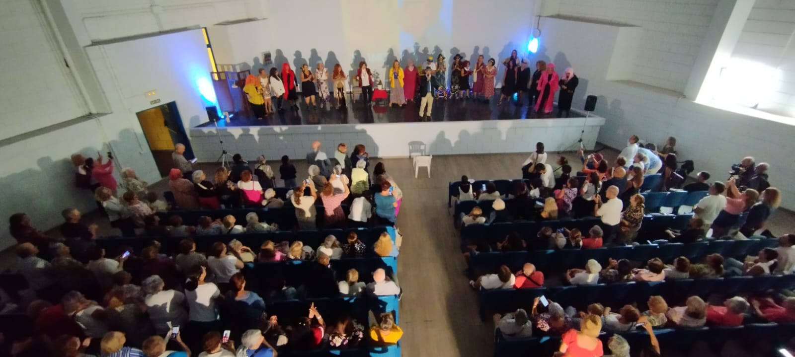
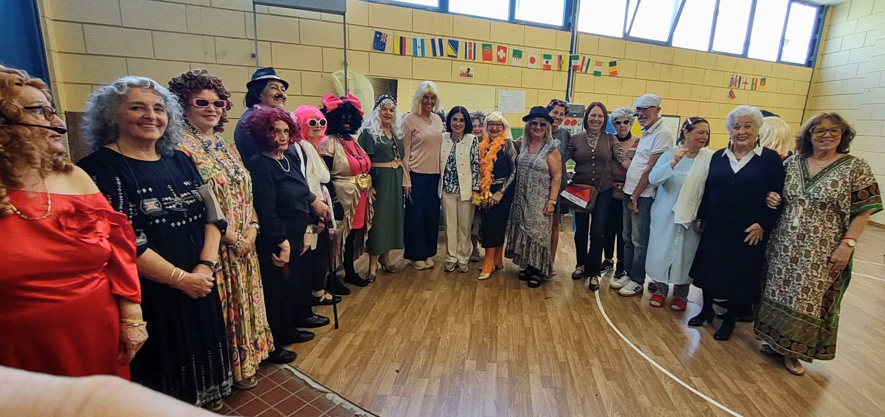
Centro cívico de la Ballena, 14 noviembre 2025: la alcaldesa Carolina Daría con las actrices antes del espectáculo.
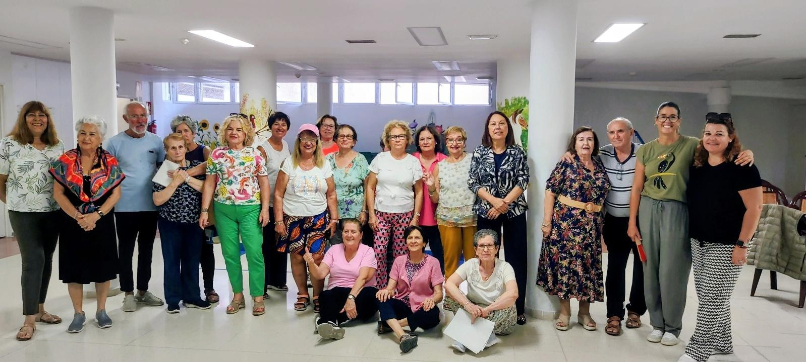
El grupo Distrito Puerto-Guanarteme con Carmen Luz Vargas, concejala de Servicios sociales del Ayuntamiento de Las Palmas.
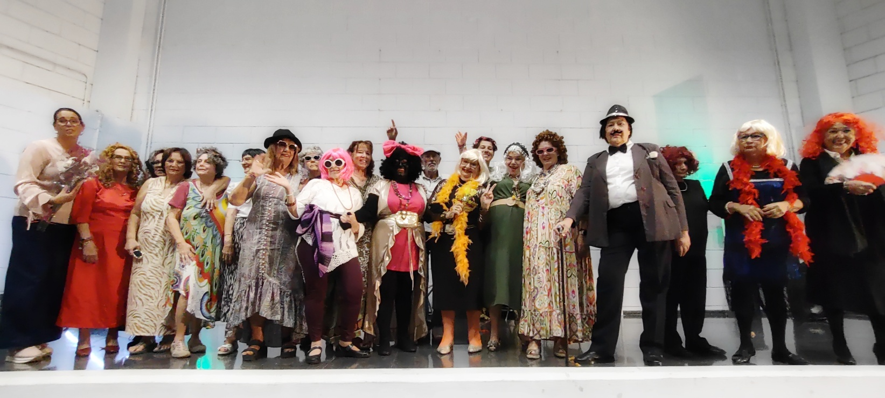
Centro Cívico de la Ballena, 14 Noviembre 2025, las protagonistas del espectáculo.